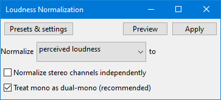

Loudness Normalization
- Using Loudness Normalization rather than Normalize or Amplify helps you more easily set the required LUFS loudness target when normalizing.
When preparing audio for television/radio programmes, podcasts and some websites you may be subject to loudness restrictions for the audio. Loudness is usually measure in LUFS (Loudness Units Full Scale). The LUFS level restrictions can vary by application. For example the level for television in the US is normally -24 LUFS and the EBU (European Broadcasting Union) recommends -23 LUFS. Out of all the standards, this one is the most serious in that a television network can get its broadcast license revoked for a violation. Send in a program with a higher level, and it will be returned for a revision.
- Another use case is creating an equally loud playlist from different sources.
- Accessed by:
- 
Normalize
There are two available options "perceived loudness" (default) and RMS:
- perceived loudness: the default -23 LUFS (the EBU standard) will produce audio that is approximately 25% of full scale.
- RMS: This will change the amplitude such that the result has the desired RMS level The default setting is -20dB which will also produce low level audio.
Both LUFS and RMS normalization ensures that different audio projects come out at a relatively uniform volume.
Normalize stereo channels independently
When this box is unchecked (the default), Loudness Normalization will work on the channels of a stereo track as a pair and change the level of both channels by the same amount. Use this if your audio is already correctly balanced as this mode will preserve its original stereo balance.
When this box is checked, Loudness Normalization will adjust the amplitude separately for the left and right channels of a stereo track. This is useful for correcting stereo recordings of LPs and cassettes which may be unbalanced, as long as significant clicks are removed first.
Treat mono as dual-mono
"Dual mono" is when a 2 channel track has identical audio in both left and right channels. A "dual mono" track will sound identical to a (1 channel) mono track that has the same audio as either channel of the "dual mono". However, the EBU R 128 specification does not take account of this, and the 2 channel "dual mono" track will measure at 3 dB higher than the 1 channel version, even though they sound identical on playback. To counter this effect, Audacity allow you to measure a mono track as if it were a dual stereo track, thus giving the same loudness measurement for a mono recording whether it is one channel mono, or 2 channel mono.
When this box is checked (the default), Loudness will internally double the amplitude of pure mono signals during the LUFS calculation. This is necessary to make mono tracks sound equally loud as dual-mono or stereo tracks on all known audio drivers since they ignore pan law.
| However, this differs from many other LUFS meters. set this "off" if you require compatibility with meters that measure mono tracks 3 LU lower. |
Workflow orderAdjusting the audio's maximum amplitude with this effect is normally best performed as a final editing step prior to export of the production audio. |